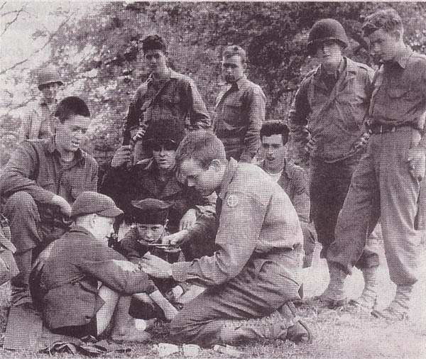

retour à la page d'accueil
APPEL A TEMOINS
| L'association 35e division Santa-Fé en Normandie a été créée fin 2000 par quelques personnes dont Andrée Chan de la Meauffe, après le passage de vétérans venus reconnaître les lieux où ils avaient combattus à la Meauffe. Un contact s'est établi et d'autres vétérans sont venus dans la Manche et ont été hébergés par des membres de l'association dont le but est de fleurir des cimetières américains deux fois par an, de perpétuer le souvenir de ces hommes souvent très jeunes qui sont courageusement venus se battre en France, mais également d'être à la disposition des vétérans américains qui se sont battus dans la région, pour les accueillir, les héberger et les accompagner sur les lieux où ils ont vaillamment combattu. |  |
En ce moment, la 35e Santa-Fé travaille pour le soixantième anniversaire du débarquement. Elle recherche deux hommes qui auraient environ 65 ans et devaient à peu près avoir 8 ans sur la photo ci-dessus qui a dû être prise le 11 juillet 1944 dans la commune de Villiers-Fossard. Jusqu'à présent, les recherches faites par l'association sont restées vaines. Un des enfants blessé se faisait soigner par un soldat américain. Cette photo provient d'un rapport fait par la 35e division américaine qui dépendait du 134e régiment. Si une personne reconnaît ces enfants ou s'ils se reconnaissent eux-mêmes, l'association vous demande de bien vouloir prendre contact avec le président M. Lacour au 02 33 56 06 01.
(La Manche Libre - 1er décembre 2002)